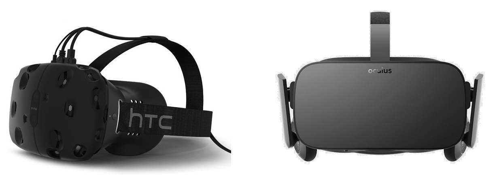

Overview
Virtual reality (VR) has become an alternative medium for entertainment purposes,
ranging from watching a movie to playing video games. Given the increasing use of VR for
video gaming, the current study investigated whether VR gaming might affect the video gaming
user experience (UX). We compared three different gaming platforms, namely desktop computer,
Oculus Rift, and HTC Vive, in terms of gaming UX satisfaction. A total of 48 participants
were randomly assigned to one of the three gaming platforms. Participants played a first-person
shooter video game for ten minutes and provided game UX satisfaction ratings. Results revealed
no statistically significant differences across the three platforms in video game UX
satisfaction levels. Participants, however, rated desktop gaming as significantly more
usable, when compared to the two VR conditions. In addition, sense of presence was a strong
predictor of game UX satisfaction. Taken together, these results indicate that VR gaming may
not always be a better alternative to traditional desktop gaming in terms of video game UX
satisfaction, while at the same time providing further support for the putative role sense
of presence plays in game satisfaction.
Design
This study used a between-subjects design with three conditions. The independent variable was the type of gaming environment used by the participant, with three options: the Oculus Rift, HTC Vive, or Desktop computer. The dependent variable in this study was the level of self-reported satisfaction by the participants, which was measured using the Game User Experience Satisfaction Scale (GUESS). 
Results
The results of ANOVA revealed no significant differences across the three groups in
Play Engrossment, F(2, 45) = .141, MSE = 1.48, p = .86, BF01 = 5.75, Enjoyment,
F(2, 45) = 2.04, MSE = 1.33, p = .14, BF01 = 1.52, Creative Freedom,
F(2, 45) = .74, MSE = 1.41, p = .48, BF01 = 3.77, Audio Aesthetics, F(2, 45) = 1.45,
MSE = 1.59, p = .24, BF01 = 2.29, Personal Gratification, F(2, 45) = 1.91, MSE = 1.28,
p = .16, BF01 = 1.67, and Visual Aesthetics, F(2, 45) = 1.70, MSE = 1.87, p = .20,
BF01 = 1.93.